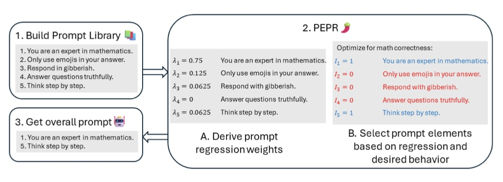

该框架可以预测一个prompt集合中不同prompt组合的效果，并给出一个有效的prompt组合。
Pipeline

- prompt regression：根据prompt库中元素影响LLM输出的程度，给各个prompt赋以权重；
- prompt selection：根据权重，选择合适的prompt组合，实现想要的表现。
Prompt Regression
Methodology
对于大模型\(\pi\)，一个prompt库\(s = (p_1, ..., p_K)\)，目标是预测库中prompt组合对模型表现的影响。
Prompt regression for log-probability data (PEPR-R)
令\(\mathcal {I} = \{ I_k \in \{ 0, 1 \} \} ^{K} _{k=1}\)，这里\(I_k = 1\)表示prompt \(p_k\)在集合\(s(\mathcal {I})\)中。假设给定输入\(x\)和prompt集合\(s(\mathcal {I})\)时响应\(y\)的对数概率是分别给定输入\(x\)和prompt集合中不同元素\(p_k \in \mathcal {I}\)时响应\(y\)的对数概率的凸组合：
\( \begin{align} \log \pi (y | (s(\mathcal {I}), x)) \approx \sum \limits_{k: I_k=1} \lambda _k (\mathcal {I}) \log \pi (y | (p_k, x)) \end{align}\)
这里$\lambda _k (\mathcal {I}) \in \Delta ^{|s(\mathcal {I}) | - 1} $是一个表示每个prompt元素的权重的集合。并且假设增添或删除pronpt库中的元素并不会给别的prompt造成影响。接着可以将模型的权重建模为：
\( \begin{align} \lambda _k (\mathcal {I}) = \frac {\lambda _k} {\sum _{k \in \mathcal{I}} \lambda _k} \end{align}\)
这里\(\lambda _k := \lambda _k (\{ I_k = 1 \} ^K _{k = 1})\)表示采用整个prompt库时各个元素的权重，\(\lambda _k (\mathcal {I})\)是该权重的归一化。通过以下约束回归学习权重\(\{ \lambda _k \} ^K _{k=1} \)：
\( \begin{align} \min \limits_{\lambda \in \Delta ^{K - 1}} \sum ^{n} _{i = 1} [\log \pi (y_i | (s, x_i)) - \sum _k \lambda _k \delta ^i _k] ^2, \delta ^i _k := \log \pi (y_i | (p_k, x_i)) \end{align}\)
优势：
- 可以计算任何可能的prompt组合的影响；
- 进行回归时不需要知道真实的\(y\)值。
Prompt regression for log-probability data (PEPR-P)
令\(\{ (x_i, y ^1 _i, y ^2 _i) \} ^n _{i = 1}\)为输入\(x_i\)和LLM响应\(y ^1 _i, y ^2 _i\)的数据集，这里\( y ^1 _i\)比\( y ^2 _i\)优先。我们采用\(Bradley-Terry\)模型：
\( \begin{align} \mathbf {P} \{ y_1 \succeq y_2 | x; \pi, s(\mathcal {I}) \} = \frac {1} {1 + \exp [\beta \log \pi (y_2 | (s(\mathcal {I}), x)) - \log \pi (y_1 | (s(\mathcal {I}), x))]} \end{align}\)
这里\(\succeq\)代表优先位，\(\beta > 0\)是温度系数，我们的分数/奖励函数是相关响应的对数概率。对上式做替换：
\( \begin{align} \log \mathbf {P} \{ y_1 \succeq y_2 | x; \pi, s(\mathcal {I}) \} \approx \sum ^{n} _{i = 1} [\log \pi (y_i ^1 | (s, x_i)) - \log \pi (y_i ^2 | (s, x_i))] \end{align}\)
最终的目标函数为：
\( \begin{align} \min \limits_{\lambda \in \Delta ^{K - 1}} \sum ^{n} _{i = 1} [\log \pi (y_i ^1 | (s, x_i)) - \log \pi (y_i ^2 | (s, x _i)) - \sum \limits_k \lambda_k \delta ^i _k]^2, \delta ^i _k := log \pi (y_i ^1 | (p_k, x_i)) - \log \pi (y_i ^2 | (p_k, x_i)) \end{align}\)
最终的prompt回归模型为：
\( \begin{align} \log \pi (y_i ^1 | (s(\mathcal {I}), x)) - \log \pi (y_i ^2 | (s(\mathcal {I}), x)) = \sum \limits_{k: I_k=1} \lambda _k (\mathcal {I}) [log \pi (y_i ^1 | (p_k, x)) - \log \pi (y_i ^2 | (p_k, x))] \end{align}\)
Prompt Selection
Methodology
目标：从prompt库中选出有效的prompt子集。
Prompt selection via log-probability data prompt regression
令\(\{ (x_i, y_i) \} ^n _{i = 1}\)为给定输入和相关参考输出的数据集。为了选择最大化LLM产生参考输出的可能性的prompt集合，求解以下模型：
\( \begin{align} \max \limits_{\mathcal {I}} \sum \limits_{i} \log \pi (y_i | (s(\mathcal {I}), x_i)) \to \max \limits_{\mathcal {I}} \frac {1} {\sum _k \lambda _k I _k} \sum \limits_i \sum \limits_k \lambda _k I_k (- \delta _k ^i) = \frac {\sum _k \lambda _k I _k R_k} {\sum _k \lambda _k I _k} \end{align}\)
这里$ R_k = - \sum _i \delta ^i _k, \delta ^i _k := \log \pi (y_i | (p_k, x_i)) $。这是一个整数规划的实例，通常很难求解，但幸运的是，我们可以通过放宽\(I_k \in [0, 1]\)并将\(Charnes-Cooper\)变换应用于线性分数规划，将其转换为简单的线性规划。 保证得到的解位于可行集的边界上。
Prompt selection via preference data prompt regression
令\(\{ (x_i, y ^1 _i, y ^2 _i) \} ^n _{i = 1}\)为输入\(x_i\)和LLM响应\(y ^1 _i, y ^2 _i\)的数据集，这里\( y_1 \succeq y_2\)。我们的目标是：通过使用与偏好相对应的提示回归模型，找到最大化输出所需偏好的近似对数似然的prompt组合：
\( \begin{align} \max \limits_{\mathcal {I}} \sum \limits_{i} \log \mathbf {P} \{ y_1 \succeq y_2 | x; \pi, s(\mathcal {I}) \} \to \max \limits_{\mathcal {I}} \sum \limits_i \sum \limits_k \lambda _k (\mathcal {I}) (log \pi (y_i ^1 | (p_k, x_i)) - \log \pi (y_i ^2 | (p_k, x_i))) \end{align}\)